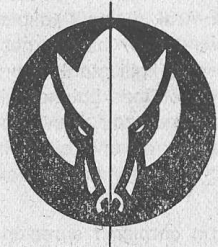
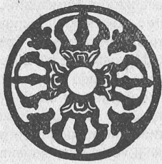
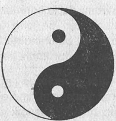
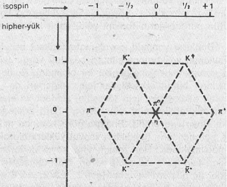
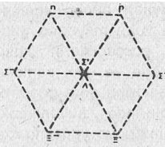
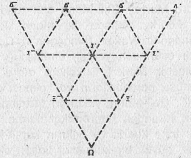

16) KUARK SiMETRiLERi. YENi BİR KOAN MI?
Atom-altı dünyası bir ritmi, bir hareketi ve sürekli bir değişimi yansıtmaktadır. Ancak bunlar, keyfî ve düzensiz değil, tam tersine, belirli ve açık kalıplar çerçevesinde gerçekleşen hareketlerdir, isterseniz açıklamalarımıza şu hareket noktasından başlayalım: Belirli bir türden olan bütün parçacıklar, aynıdır. Onların kütlesi, elektrik yükleri ve diğer karakteristik özellikleri, birbirinin aynıdır. Dahası, elektriksel olarak yüklü olan bütün parçacıklar ya tam olarak bir elektronun yüküne ya da bu yükün tam iki katı büyüklüğündeki bir yüke sahiptirler. (Veya ters bir elektriksel yüke sahip bulunurlar). Parçacıkların diğer karakteristik özellikleri için de, bunun benzeri kurallar geçerlidir. Yani parçacıklar keyfî değerlere değil, sınırlı sayıdaki belirli büyüklüklere sahip ola» bilmektedirler. Bu nedenle, parçacıkları bir kaç farklı guruba ya da «aileye» ayırabilmekteyiz. Ancak bu noktada, dinamik ve sürekli olarak değişen bir parçacık dünyasında bu tür kalıpların nasıl meydana geldiğini sormamız gerekmektedir.
Madde yapısının içinde bulunan genel kalıpların ortaya çıkartılmış olması, aslında çok yeni bir fenomen değildir. Çünkü bunlara benzer kalıplar atomların dünyasında da mevcuttu. Yine atom-altı parçacıklarda olduğu gibi, aynı türden atomların tümü, aynıdır. Kimyasal elementlerde görülen atom türleri de, buna dayanılarak hazırlanan periyodik bir element cetvelinde, az sayıda guruba ayrılabilmiştir. Günümüzde bu sınıflandırma artık çok iyi anlaşılmış bir durumdadır. Bu gruplandırma, atom çekirdeğinde bulunan proton ve nötronların sayısına ve elektronların çekirdek çevresinde oluşturdukları küresel orbitlerin (ya da «tabakaların») dağılımına bağlıdır. Daha önce de tartışıldığı gibi, elektronların dalgasal bir doğaya sahip olmaları, elektron orbitlerinin, birbirlerine olan uzaklıklarını sınırlamaktadır. Elektronun belirli bir orbitte sahip olduğu dönel hareket miktarı ise, elektron dalgalarımın belirli titreşimlerine denk düşen kesin değerlere bağlı olmaktadır. Sonuç olarak atom yapısında belirli kesin kalıplar meydana gelmekte, bunlar tam sayısal «Kuantum sayıları» ile belirlenmekte ve atomsal orbitlerdeki elektron dalgalarının titreşim kalıplarını yansıtmaktadırlar. Söz konusu titreşimler, bir atomun «Kuantum durumunu» belirlemekte ve iki eşit «temel durumda» ya da aynı «uyarılmış durumda» bulunan atomların da tamamıyla özdeş olmalarını sağlamaktadır.
Parçacık dünyasındaki kalıplar da atomsal dünyadakilere çok benzemektedir. Örneğin parçacıkların birçoğu, bir topaç gibi kendi eksenleri çevresinde dönmektedirler. Söz konusu «spinler», bazı temel birimlerin tam sayısal katsayıları olan kesin değerlerle sınırlıdırlar. Örneğin baryonlar yalnızca 1/2, 3/2, 5/2 gibi spinlere, mesonlar ise 0,1, 2 gibi spin değerlerine sahip olmaktadırlar. Bu olgu, atomsal orbitlerinde dönel olarak hareket eden elektronların değerlerine çok benzemektedir. Çünkü elektronlar da tam sayılar halindeki değerlerle kesin olarak sınırlanmışlardır.
Atomsal kalıplarla olan benzerlik, şiddetli etkileşim gösteren her parçacığın, yani bütün hadronların, kütle ve spin dışında aynı özelliklere sahip başka alt bölümlere ayrıldıklarını daha da belirginleştirmektedir. Bu alt bölümlerin daha üst kademedeki üyelerini, «rezonanslar» olarak isimlendirilen çok kısa ömürlü parçacıklar oluşturmaktadırlar. Som yıllarda bu gibi parçacıklardan çok sayıda örnek tespit edilebilmiştir. Rezonansların kütle ve spinleri, her alt bölüm içinde belirli ve kesin bir yolla çoğalmaktadır. Bunun sonsuza dek böylece sürüp gittiği sanılmaktadır. Böyle bir düzen, uyarılmış atom durumlarını hatırlatmaktadır. Bu yüzden fizikçiler, bir hadron alt bölümünde bulunan üst düzeydeki üyelerin asılında en düşük kütleli üyelerin uyarılmış durumumu oluşturduklarını düşünmektedirler. Bir atomda olduğu gibi, bir hadronda da çok kısa ömürlü uyarılmış durumlar var olabilmekte ve böylece daha büyük bir dönel harekete (ya da spine) ve enerjiye (ya da kütleye) sahip alabilmektedir.
Atomların Kuantum durumları ile hadronlar arasındaki benzerlik, hadronların içsel bir yapıya sahip olan birleşik nesnelerden meydana gelmiş olabileceklerini düşündürmüştür. Bu içsel yapılar, «uyarılma» yeteneğine sahip kalıplardır, yani çeşitli biçimlerdeki enerjileri emebilecek farklı kalıpları oluşturmaktadırlar. Buna rağmen, günümüzde bu kalıpların nasıl biçimlenmiş oldukları bilinmemektedir. Aslında bunlar, atom fiziğindeki atom öğeleri arasında (protonlar, nötronlar ve elektronlar) cereyan eden etkileşimler ve buradan doğan özellikler olarak açıklanabilmelerine rağmen, parçacık fiziğinde henüz böyle bir açıklamaya gidilememiştir. Parçacık dünyasında, tespit edilen kalıplar, yalnızca ampirik bir biçimde sınıflandırılmışlar ve henüz parçacık yapısının detaylarından yola çıkılarak ispat edilememişlerdir.
Parçacık fizikçilerinin karşılaştıkları bir diğer önemli zorluk da, bileşik «nesnelerden» meydana gelen ve belirli «öğelerden» oluşan klasik yaklaşımın, artık atom-altı parçacıklar için uygulanamamasıdır. Parçacık «öğelerinin» nelerden meydana geldiklerini bula bilim enin tek yolu ise onları, yüksek enerjiler gerektiren çarpışma süreçleri içinde çarpıştırmak ve böylece onları bölmektir. Ama bu yapıldığında da, ortaya çıkan parçacıklar orijinal parçacıklardan daha «küçük» olmayacaklardır. - Örneğin iki proton, yüksek bir hızla çarpıştığında çok sayıda parçacığa parçalanabilmektedirler. Fakat bunlar arasında hiç bir zaman «bir protonun parçası» bulunmayacaktır. Yani parçacıklar her zaman tam bir hadron olacak ve bunlar da çarpışan protonların taşıdıkları kinetik enerji ve kütleden meydana geleceklerdir. Bir parçacığın, onu oluşturan «öğelerine» ayrıştırılması bu açıdan, çarpışma süreci sırasındaki enerji miktarına bağlı olarak kesin olmaktan uzak olacaktır. Burada çok önemli bir zafiyet durumu ile karşı karşıyayız. Artık dinamik kalıplar ayrışmakta ve yeniden düzenlenmekte, bileşik nesneler ve onları oluşturan öğeler ile ilgili statik kavram da, söz konusu kalıplar göz önünde bulundurulduğunda geçersiz ve anlamsız olmaktadır. Yani atom-altı parçacıkların «yapısı» ancak dinamik bir biçimde, söz gelimi, süreç ve etkileşim kavramları ile açıklanıp, anlaşılabilmektedir.
Parçacıkların çarpışma süreçleri içinde parçalanmaları, bazı kesin kurallara göre cereyan etmektedir. Oluşan yeni parçacıklar aynı türden oldukları için, bu kurallar parçacık dünyasında gözlenebilen düzenliliği aydınlatmak içim kullanılabilmektedir. Örneğin günümüzde var oldukları bilinen parçacık ve parçacık «ailelerinin» daha henüz keşfedildiği altmışlı yıllarda, fizikçilerim çoğu, çalışmalarını söz konusu düzenliliği ortaya çıkarmak yönümde yoğunlaştırmışlardı. Parçacık kalıplarınım dinamik sebeplerini oluşturan sorunları incelemek yerine, düzenliliklere ilgi duyan fizikçiler, kısa bir süre içimde başarılı da alabilmişlerdi.
Bu yeni araştırmalarda «simetri» (bakışım) yaklaşımı çok önemli bir rol oynamıştı. Genel olarak kabul edilen simetri kavramını genelleştiren ve ona daha soyut bir anlam kazandıran fizikçiler simetriyi, parçacıkların sınıflandırılması yönünde büyük yardımları dokuman güçlü bir alet halime getirmişlerdi. Günlük hayatımızda, simetri ile ilgili en tanınmış örnek olarak aynada meydana gelen /yansıma gösterilebilir. Veya, bir şeklin ortasından bir çizgi çekip onu iki bölüme ayırdıktan sonra, o bölümlerin tamamen özdeş olmaları halimde, yani birbirlerini tıpatıp yansıttıklarında söz konusu şeklim simetrik (bakışımlı) olduğunu söyleriz.

Daha değişik simetri örneklerinde ise (örneğin aşağıdaki Buddhist sembolde olduğu gibi), aynı desenli birçok kez yansıtarak çok karmaşık bir simetriyi oluşturabiliriz.

Ancak yansıma, simetrinin tek oluşum yöntemi değildir. Eğer bir şekil belirli bir açı ile döndürüldüğünde ortaya çıkan yeni şekil ilk baştakinin aynı gibi gözüküyorsa, bu şekle de «simetriktir» deriz. Örneğin Çin kaynaklı Yin-Yang diyagramının biçimi de böyle bir dönel simetriye sahiptir.

Parçacık fiziğindeki simetri ise, yansıma ve dönellik dışında birçok diğer biçimlerde de karşımıza çıkmaktadır. Söz konusu simetrik ilişkiler alışıldık uzayda (ve zamanda) meydana gelebildikleri gibi, soyut matematiksel uzayda da ortaya çıkabilirler. Bu simetriler, parçacıklara ya da parçacık gruplarına uygulanmakta ve bu parçacıklar da karşılıklı etkileşimleri ile iç içe olduklarından, aynı simetriler, etkileşimler (yani, parçacıkların dahil oldukları süreçler) için de geçerli olmaktadır. Bu simetrik ilişkiler atom-altı araştırmalarda çok faydalı olmaktadırlar. Çünkü onların «korunma yasaları» ile yakından ilişkileri vardır. Parçacık dünyasındaki bir süreç belirli bir simetri gösterdiğinde, burada «korunan» ve ölçülebilen bir miktarın (değerin) var olduğu, kestirilebilmektedir. Bu miktar, süreç süresince bütünüyle korunacaktır. Bunlar, atom-altı maddenin o gizemli dansına belirli bir sürekliliği ve istikrarı sağlamaktadırlar. Örneğin bazı miktarlar, bütün etkileşimlerde korunmalarına rağmen, diğerleri yalnızca bazı etkileşimler çerçevesinde korunabilmektedir. Böylece her bir süreç, belirli ve korunan bir «miktarlar seti» ile ilişkilendirilebilmektedir. Yani parçacık özeliliklerindeki simetriler, etkileşimleri sırasında bir takım korunma yasaları olarak karşımıza çıkmaktadırlar. Bu sebeple fizikçiler, her iki kavramı da kullanmakta ve bazen bir sürecin simetrisine, bazen de ona uygum gelen bir korunum yasasına atıfta bulunmaktadırlar. Bunlardan hangisinin kullanılacağı, durumun kendisine bağlıdır.
Günümüzde, tüm süreçlerde gözlenebilen dört tane temel korunma yasasının var olduğu bilinmektedir Bunlardan üç tanesi, alışıldık uzay ve zamandaki basit simetri işlemleri ile bağlantılıdırlar. Buna göre, bütün parçacık etkileşimli eri, uzaydaki yer değişmelerime bağlı olmaksızın simetriktirler. Yani Londra'da ya da New York'ta meydana gelen iki tane etkileşim de birbirlerinin aynı olacaktır. Ayrıca etkileşimler zamandan bağımsız olarak da sürekli bir simetri göstereceklerdir. Yani iki etkileşim hem pazartesi günü ve hem de çarşamba günü aynı biçimde cereyan edecektir. Bu simetrilerin ilki moment ile ilgilidir, ikincisi ise enerjinin korunumunu kapsamaktadır. Bunların anlamı, bir etkileşime katılan tüm parçacıkların toplam momentlerinin ve enerjilerinin (kütleleri dahil) etkileşimden önce ve sonra da aynı kalacağıdır. Temel simetrinin üçüncüsü, uzaydaki yön bulma ile ilgilidir. Örneğin bir parçacık çarpışması sırasında, parçacıkların kuzey-güney ya da doğu-batı yönünde ilerlemeleri bir fark yaratmayacaktır. Bu simetrinin bir sonucu olarak, bir sürece katılmış olan toplam dönellik miktarı (parçacıkların kendi spinleri dahil) her zaman korunacaktır. Son olarak da elektrik yükünün korunumu vardır. Bu ise daha karmaşık bir simetri ilişkisi ile ilgilidir. Ama bir korunum yasası biçiminde formüle edildiğinde, çok basit bir görünüm kazanmaktadır. Şöyle ki: Bir etkileşime katılan bütün parçacıkların toplam yükü sabit kalmaktadır.
Bunların yanında, soyut matematiksel uzaylarda uygulanan ve korunan simetri çeşitleri vardır (yüklerin korunumundakine benzer bir biçimde). Bunlardan bazıları bütün etkileşimler için, diğerleri de bazı önemli etkileşimler için (örneğin: şiddetli ve elektromanyetik etkileşimler için: Evet, hafif etkileşimler için: Hayır) geçerlidir. Bunlara göre korunan miktarlar, parçacıkların taşıdıkları «soyut yükler» olarak ele alınabilmektedir. Her zaman tam sayılı değerler aldıkları için (±1, ±2 gibi) ya da «yarı-tamsayılı» değerler ile gösterildiklerinden(±:l/2, ±3/2, ±5/2 gibi), onlara, atom fiziğine benzer biçimde, «Kuantum sayıları» denmiştir. Bu durumda her bir parçacık, kütlesiyle beraber düşünüldüğünde onun özelliklerini tam, olarak yansıtabilen bir Kuantum sayısı setinden oluşmaktadır. Örneğin hadronlar, belirli ve kesin bir «isospin» ve ««hiper-yük» değerine sahiptirler. Söz konusu değerler, bütün şiddetli etkileşimlerde korunan iki tane Kuantum sayısıdır aslında. Bir önceki bölümde gösterilen tablodaki sekiz mesonun tümü de bu iki Kuantum sayısının değerlerine göre düzenlendiklerinde, «meson okteti» diye anılan bir altıgen kalıp meydana getirmektedirler. Bu düzende de, büyük bir «simetri göze çarpmaktadır. Altıgende, parçacıklar ve onların karşıt-parçacıkları karşı karşıya gelmekte ve merkezdeki iki parçacık da kendi karşıt-parçacıklarını oluşturmaktadırlar. En hafif sekiz baryon da buna benzer bir kalıbı meydana getirmekte ve genelde bu yapıya da «baryon okteti» adı verilmektedir.

Mezon okteti
Fakat bu sefer, karşıt-parçacıklar oktet dahilinde bir kalıp oluşturmak yerine, bununla özdeş ikinci bir «karşıt-oktet» meydana getirmektedirler.

Baryon okteti
Parçacık tablosunda arta kalan bir baryon ise (yani, omega baryonu), dokuz tane rezonans ile birlikte «baryon dekupleti» diye anılan başka bir kalıbı meydana getirmektedir.

Baryon dekupleti
Belirli bir simetri kalıbındaki bütün parçacıkların Kuantum sayıları, isospin ve hipher-yük değerleri hariç, -bütünüyle özdeştirler, isospin ve hipher-yük yardımı ile, parçacıkların kalıplardaki yerleri belirlenmektedir. Örneğin meson oktetinde bulunan bütün mesonla r sıfır spine sahiptirler (yani, hiç bir spinleri yoktur). Oktetteki baryonlar ise, 1/2 değerinde bir spine ve dekuplettekiler de 3/2 değerinde bir spine sahiptirler.
Kuantum sayıları bunun yanında, parçacıkların tam bir simetrik kalıp meydana getiren ailelere ayrıştırmalarında, parçacıkların kalıplardaki özgün yerlerini belirlemede ve aynı zamanda sahip oldukları korunum yasalarına göre gösterdikleri, çeşitli etkileşim sınıflamalarında kullanılmaktadırlar. Birbiri ile ilintili olan simetri ve yansıma kavramları, görüldüğü gibi, parçacıklar dünyasındaki düzenlikleri açıklamakta çok yararlı olmuştur.
Aslında bu düzenliliklerin birçoğunu çok çarpıcı bir biçimde açıklayabiliriz: Eğer bütün hadronların aynı cinsten ve az sayıda temel varlıklardan (şimdiye dek görülememiş olmalarına rağmen) oluştuklarını düşünürsek, durum birdenbire kolaylaşmaktadır. Bu varlıklara Murray Gell-Mann çok tuhaf bir isim takmıştır: «kuark». Aslında Gell-Mann, James Joyce'un «Finnegans Wake» (Finnegan'ın Cenaze Merasimi) adlı eserinden yaptığı alıntıyla («Three quarks for Muster Mark») fizikçilere atıfta bulunmuş ve söz konusu parçacıkların var olması gerektiğini öngörmüştü. Gell-Mann, yukarıda tartıştığımız oktet ve dekuplet türünden hadron kalıplarına, kendi geliştirdiği üç tane kuarkı ve onların karşıt-kuarklarını uygulayarak, büyük bir kuramsal başarı elde edebilmişti. Daha sonra bu yapı taşlarını farklı bileşimlerde kullanarak baryonlar ve mesonlar oluşturmuş, kuantum sayılarını da onları oluşturan kuarklara ilave etmişti. Bu açıdan, baryonların üç tane kuarktan, onların karşıt-parçacıklarının ise üç tane karşıt-kuarktan; buna mukabil mesonların da bir kuark ve bir karşıt kuarktan «oluştuklarını» iddia edebilmişti.
Bu modelin basitliği ve etkinliği çok çarpıcı olmasına rağmen, kuarkları, kolaylıkla hadronlar meydana getiren gerçek fiziksel öğeler olarak kabul edemeyiz. Çünkü şimdiye kadar hiç bir hadron kendisini oluşturan kuarklara ayrıştırılamamıştır Mümkün olan en yüksek enerjilerde çarpıştırdıkları halde bile, bu işlem başarılamamaktadır. Bu da göstermektedir ki, kuarklar çok şiddetli bağlama kuvvetleri ile birbirlerine yapışmış durumdadırlar. Parçacıklar ve onlar arasında meydana gelen etkileşimler hakkında sahip olduğumuz bilgilere göre, söz konusu kuvvetler kendilerini diğer parçacıkların değiş-toku-şu aracılığı ile belli edeceklerdir. Fakat bu demektir ki, söz konusu parçacıklar da hadronların dahilinde bulunmalıdırlar. Eğer bu doğru ise, bunlar da hadronun özelliklerini belirlemeli ve bunun bir sonucu olarak da, basit kuark modelini yok etmelidir.
Bir başka deyişle, kuarklar şiddetli etkileşim kuvvetleri ile bağlanmışlarsa, başka parçacıklar da var olmalıdır ve bunun bir sonucu olarak kuarklar da, belirli bir «yapıya» sahip olmalıdırlar (bütün diğer şiddetli etkileşim gösteren parçacıklarda olduğu gibi). Ancak kuark modeli için, kuarkların noktasal ve yapısız olmaları zorunludur. Aksi halde model başarısız olacaktır. Bu temel zorluk nedeni ile kuark modelinin, simetrilerini ve bağlanma kuvvetlerini de dikkate alan düzenli ve dinamik bir açıklanması mümkün olamamıştır.
Öte yandan deneysel alanda adeta bir ««kuark avı» başlamış olmasına rağmen, şimdiye dek hiç bir başarı elde edilememiştir. Eğer tek tek kuarklar varsa, onlar aslında göze çarpan bir özellik göstermelidirler; çünkü Gell-Mann'ın modeli, kuarkların alışılmışın dışında özelliklere sahip olduklarını ileri sürmektedir. Örneğim kuarklar arasında parçacıklar dünyasında hiç bir yerde rastlanmayan 1/3 ve 2/3 gibisinden elektriksel yükler olmalıdır. Ancak çok kapsamlı araştırmalara rağmen, şimdiye dek bu özelliklere sahip bir parçacık gözlemlenememiştir. Deneysel ispat yoksunluğu ve önemli kuramsal engeller, kuarkların varlıklarını şüpheli bir duruma sokmuştur.
Ancak öte yandan kuark modeli, parçacıklar dünyasında görülen düzenlilikleri açıklamakta çok yararlı ve başarılı olmaya da devam etmektedir. Ama artık başlangıcındaki basit biçimi de terk edilmiştir. Örneğin Gell-Mann'ın orijinal modelinde, hadronlar üç çeşit kuark ve aynı sayıdan karşıt-kuarktan oluşmaktaydı. Ancak günümüzde fizikçiler, varolan çok sayıda hadron kalıplarını açıklamak üzere bir takım ek kuarklar geliştirmişlerdir. Bir süre önce, Gell-Mann'ın kendisi de Paris'te verdiği bir konferans/ ders'te, her kuarkın üç farklı biçimde ortaya çıktığını ve bunlara «kırmızı, beyaz ve mavi kuarklar» ismimi verdiğini açıklamıştır. Böylece kuarkların toplam sayısı on dokuza yükselmiş ve o tarihten beri üç ayrı kuarkın daha bunlar arasına katılmaları önerilmiştir(*). Bu durum konferansa katılan bir fizikçi tarafından, bunların «gözlemlenen on iki kuark» oldukları biçiminde, anlamsız bir yaklaşımla dile getirilmiştir.
(*) Dördüncü kuark üçlüsü, yeni türde bir hadronun varlığına dayanmaktadır. Son zamanlarda keşfedilen «psi parçacıkları» bu tür parçacıklar olabilirler.
Ama yine de bu on iki kuark yardımı ile başarılı bir şekilde açıklanabilen düzenliliklerin sayısı gerçekten de çok çarpıcıdır. Hadronların bir takım «kuark simetrileri» gösterdikleri hiç şüpheye mahal vermeyecek kadar açıksa da, parçacıklar ve onlar arasındaki etkileşimler ile ilgili elde ettiğimiz bilgiler ışığında, genel anlamda kuarkların var olamayacakları belirlenmiştin Şu anda, yani 1974 yılımın yazında, kuark modelini kapsayan karşıtlıklar gittikçe belirginleşmektedir. Örneğin deneysel verilerin bir çoğu kuark modelini desteklemesine rağmen, bazıları da bu modele tamamen ters düşen sonuçlar ortaya çıkarmaktadırlar. Şimdiye dek hiç kimse bir kuarkı gözlemleyememiştir ve sahip olduğumuz temel parçacık etkileşimleri bilgilerimize göre de, hiç kimse onları gözlemleyemeyecektir, çünkü onların var olmaları imkânsızdır. Ancak buna rağmen, kuarkların sanki noktasal öğelerden oluşuyormuşçasına davranmakta oldukları düşünülmektedir. Bu durum, atom fiziğinin ilk günlerinde de yaşanmıştı, o tarihlerde, buna benzer karşıtlıklar fizikçilerin atomları kavramaları yönünde önemli katkılarda bulunmuştu. Aslında bu kuark bilmecesi yeni bir koanı oluşturan tüm özellikleri bünyesinde toplamaktadır. Bu yeni koan, atom-altı parçacıklar hakkındaki görüşlerimizde önemli gelişmeler ve değişmeler sağlayabilecek niteliktedir.
Parçacık dünyasında hüküm süren bazı simetrik kalıpların keşfedilmiş olması, fizikçilerin bu kalıpların doğanın temel yasalarını yansıttıkları yönünde düşünmelerine sebep olmuştur. Son on beş yıldır da, söz konusu «temel simetriyi» bulmak için büyük çabalar harcanmıştır. Bu temel simetriye bilinen bütün parçacıklar dahil olacak ve böylece maddenin «yapısı» da ortaya çıkacaktır. Aslında bu amaç eski Yunanlılardan arta kalan ve yüzyıllarca korunan felsefî bir yaklaşımı yansıtmaktadır. Çünkü Yunan bilim, felsefe ve sanat anlayışında geometri ile birlikte ortaya çıkan simetri fikri önemli bir rol oynamakta ve güzelliği, uyumluluğu ve mükemmelliği yansıtmaklaydı Örneğin Pithagoras'çılar simetrik sayı kalıplarını, tüm nesnelerin özü olarak kabul ediyorlardı. Platon, dört element atomlarının sert cisimler biçiminde olduklarını düşünüyordu. Birçok Yunanlı astronom da, gök cisimlerinin daireler üzerinde hareket ettiklerine inanıyorlardı. Çünkü onlara göre, bir daire, simetri açısından en mükemmel geometrik şekli oluşturuyordu.
Doğu felsefesinin yaklaşımı ise, eski Yunanlılar ile karşılaştırıldığında tamamen farklı idi. Uzak Doğu'daki mistik geleneklerde, simetrik kalıplar belirli semboller ya da meditasyon araçları olarak kullanılmaktaysa da, bu insanların geliştirdikleri felsefî sistemde, simetri kavramının pek önemli bir yeri yoktur. Geometri gibi simetrinin de, aklımızın bir ürünü olduğu savunulmakta ve doğanın temel bir özelliğini yansıtmadığı düşünülmektedir. Bu yüzden Doğu'da görülen birçok sanat eserleri asimetriye büyük bir ilgi göstermekte ve bazen de tüm düzenli ya do geometrik biçimleri önlemeye çalışmaktadırlar. Çin'de ve Japonya'da görülen Zen kaynaklı resimler, «tek köşe» diye isimlendirilen bir tarzda yapılmışlardır. Bir diğer örnek de Japon bahçelerinde görülen düzensiz sınır taşlarıdır. Bunların tümü Uzak Doğu kültüründeki genel yaklaşımı güzel bir biçimde yansıtan simgeler gibidir.
Bu açıdan, parçacık fiziği dalında temel simetriler yolunda harcadığımız çabaların aslında Helenistik mirasımızdan kalıma bir alışkanlık olduğunu söylemek mümkündür. Ayrıca bu arayış, bir bakıma da, modern bilimde daha henüz ortaya çıkmaya başlayan genel dünya görüşü ile bağdaşamaz gibi de gözükmektedir. Ama öte yandan simetrinin vurgulanması, parçacık fiziğindeki görüşlerden yalnızca bir tanesidir. «Statik» simetri yaklaşımına karşı her zaman «dinamik» bir düşünce okulu da var olmuştur. Bu dinamik okul, parçacık kalıplarını doğanın temel özellikleri olarak ele almaz. Ancak yine de bu araştırmaları, atom-altı dünyadaki dinamik doğanın ve önemli etkileşimlerin anlaşılması yönünde atılmış adımlar olarak görür. Bundan sonraki iki bölümde bu okulun son on yılda doğa yasaları ve simetriler hakkında nasıl radikal yeni fikirleri ortaya attığını göreceğiz. Söz konusu yeni fikirler, buraya kadar anlattığımız modern fiziğin dünya görüşü ile hem büyük bir uyuşum göstermekte ve hem de Doğu felsefesi ile tam bir fikir birliği oluşturmaktadırlar.